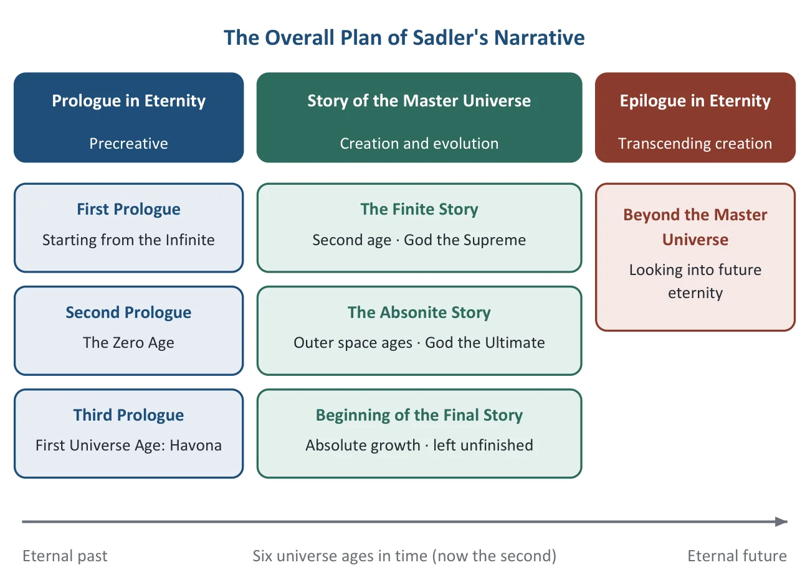

Original: Prefacio · Prólogo en la eternidad · Primer prólogo: Antes del comienzo de los comienzos (pp. 1–5)
El estudio de Sadler cuenta la historia del universo maestro, es decir, una historia de creación y evolución. Antes de ella se extiende la eternidad que precede a toda creación; después de ella se encuentra algo que bien puede trascender por completo la creación. Sadler explica que escribió el estudio para sacar a la luz una belleza escondida en los documentos remotos y difíciles de El libro de Urantia. Y ancla toda la narración en el Infinito, Aquel a quien llamamos Dios.
A Study of the Master Universe reúne en una sola narración los pensamientos que Sadler fue depurando durante años de lectura de El libro de Urantia. Su tema es el universo maestro, y el universo maestro, tal como él lo ve, es un drama de creación y evolución. Es al mismo tiempo el relato de cómo crecen y se despliegan el Ser Supremo y Dios el Último.
Sadler amplía este relato en las dos direcciones del tiempo. Lo que viene antes del universo maestro pertenece, en su mayor parte, a lo precreativo; lo que viene después probablemente es algo que va más allá de la creación. Por eso el libro se abre con un «Prólogo en la eternidad», dedicado a lo que existía antes de la creación, y se cierra con un «Epílogo en la eternidad», que mira más allá del límite más exterior del universo maestro.
Entre estos dos extremos, el cuerpo principal se divide en tres relatos. El primero trata del crecimiento y desarrollo de las cosas finitas; el segundo, del crecimiento de lo absonito, que se encuentra más allá de lo finito; el tercero, del crecimiento absoluto. Sadler admite con franqueza que el tercer relato puede comenzarse pero no terminarse. Es, en efecto, una historia con un final abierto.

Sadler mantuvo el texto principal tan sencillo como pudo y trasladó las referencias a El libro de Urantia a los apéndices. El texto principal es un relato para el lector interesado; los apéndices son breves ensayos para el estudiante serio. El presente comentario sigue esa disposición: trata el texto principal en la primera parte y los apéndices en la segunda.
En su prefacio Sadler se plantea una pregunta: ¿por qué escribir un estudio así? Su respuesta comienza con una imagen. El libro de Urantia, sugiere, fue compuesto menos como un libro de texto y más como una sinfonía. Los temas conceptuales surgen, se desvanecen y regresan; los movimientos de la verdad que se despliega se repiten y se desarrollan, y a través de ellos toma forma una larga narración.
Algunos movimientos llevan una melodía tan hermosa y sencilla que cualquiera queda cautivado de inmediato. La vida de Jesús es uno de ellos. Difícilmente a alguien podría disgustarle el relato de un hombre que creció entre la gente e hizo a Dios vivamente presente en medio de ella. Otros documentos, sin embargo, están construidos sobre armonías tan intrincadas que la melodía no se capta con facilidad. Su belleza no ha desaparecido; simplemente es menos evidente. Sadler emprendió su estudio para sacar a la luz esa melodía escondida.
Los documentos que parecen más lejanos y difíciles están llenos de un movimiento conceptual finamente elaborado, en el que cada hebra representa alguna verdad viva. Si logramos captarlo, dice Sadler, obtenemos un nuevo horizonte, una línea frente a la cual los asuntos de este mundo y de esta vida pueden verse de nuevo. Equivale a adquirir la perspectiva más amplia que la mente humana es capaz de abarcar.
Todos estamos incluidos en los planes de Dios para el futuro. Esos planes son tan vastos y tan abiertos que su mismo tamaño los hace difíciles de ver. Sadler cree que se revelan en parte dentro del universo maestro, y considera que el propósito de su estudio es acercar al lector, aunque sea un poco, a esa gran aventura.
El libro de Urantia describe también la búsqueda de Dios como una empresa sin fin.
Aunque alcancéis mucho de Dios, siempre habrá más de él, la existencia del cual vosotros jamás sospecharéis siquiera.106:7.5
El universo maestro es una realidad que continuará en el futuro eterno. Sin embargo, aparte de Havona, no es una realidad que haya existido desde el pasado eterno. En sentido estricto, pues, un estudio del universo maestro comienza solo cuando Havona puede contemplarse en relación con los universos que vienen después de él. Por eso Sadler coloca un prólogo delante del relato principal, en el que examina primero los actos eternos de la Deidad que prepararon el escenario espacial para el universo maestro, y de hecho el escenario para el propio Havona.
El prólogo tiene tres partes. La primera, «Antes del comienzo de los comienzos», parte del Infinito. La segunda imagina lo que precedió a Havona y se llama la «Edad Cero». La tercera describe la «Primera Edad del Universo», cuando Havona estaba solo. Este comentario trata estas tres partes, una tras otra, en los capítulos 1 a 3.
A lo largo de El libro de Urantia corre la sugerencia de que detrás de todo, antes de todo comienzo, está el Infinito. Sadler observa que el lector llega poco a poco a una «sensación» de que los Absolutos, las Deidades y las Trinidades son todos aspectos y fases diferentes del Infinito. Dios parece ser la personalización del Infinito. El nombre «Padre Universal» es el nombre que le damos teniendo en cuenta su relación con nosotros, sus hijos mortales.
El Prólogo de El libro de Urantia relaciona este Infinito con la verdadera infinidad del Padre.
El Infinito se utiliza para denotar la plenitud —la finalidad— que corresponde a la primacía de la Primera Fuente y Centro.0:3.24
Para expresar el pensamiento de Sadler con nuestras propias palabras: la infinidad de Dios es el fundamento de toda estructura que él ha hecho. La Deidad, los Absolutos y la Trinidad, lo existencial y lo experiencial, lo actual y lo potencial, las realidades del tiempo y las realidades de la eternidad, todo descansa sobre ella.
Solo dos seres, al parecer, conocen plenamente a este Uno infinito: sus iguales, el Hijo Eterno y el Espíritu Infinito. Incluso como el Infinito, pues, el Padre no carece de compañeros que lo comprendan. Pero estos dos coordinados conocen al Padre precisamente porque comparten su infinidad.
Para seres como nosotros, que aparecemos más tarde y crecemos por la experiencia, la búsqueda del Infinito es a la vez el primer y el último desafío. Sadler ve esta búsqueda moverse en dos direcciones a la vez. Una es un viaje interminable de descubrimiento hacia fuera, hacia la infinidad cuantitativa de Dios más allá de nosotros. La otra es una exploración cualitativa igualmente interminable hacia dentro, hacia el fragmento del espíritu de Dios que ahora mora en nosotros en la carne, el Ajustador del Pensamiento.
El Padre eterno está a la vez más lejos que nadie y más íntimamente asociado que nadie con sus hijos mortales planetarios.107:0.1
Sadler llama al punto de partida de su estudio un «fundamento no demostrado»: la convicción de que debajo de todo lo que sucede está el Infinito, que es Dios. No lo presenta como la conclusión de un argumento, sino como la confianza con la que comienza una investigación. A partir de ahí sigue el despliegue del propósito de Dios a través del tiempo y del tiempo trascendido hasta el futuro eterno, preguntándose hasta dónde podemos avanzar en la búsqueda del Padre, que es final, no cualificado, absoluto y, en último término, infinito. El propio libro de Urantia llama a este concepto el «Padre-Infinito» [0:3.24].